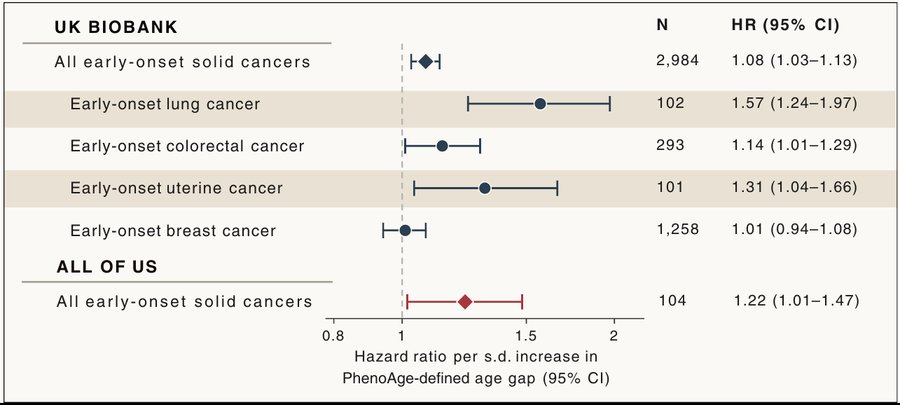
Biological Aging & Early-Onset Cancer
Why biological age gaps track with early-onset cancer risk, and what mutational signatures could add.
Cancer Cell 2026
First author · SpotlightWhen do microbes damage our DNA, and when do they help damaged cells grow?
Colorectal cancer is rising fastest in younger generations, a shift that points to exposures encountered from early life onward. Some gut bacteria produce genotoxins that damage host DNA. Colibactin, made by bacteria carrying the pks island, leaves a recognisable mutational signature that is enriched in early-onset colorectal cancer and can be acquired in the first decade of life. Yet pks+ bacteria are also common in people who never develop cancer, and at diagnosis the bacteria and the mutations often do not coincide. Other microbes, such as Fusobacterium nucleatum, may instead help cells that already carry mutations to expand.
My research asks when, and under which host and microbial conditions, microbial exposures cause lasting mutations or promote the progression of initiated cells, and whether those conditions can be changed to prevent colorectal cancer.
This program builds on my work in mutational signatures and microbial profiling. Through the Cancer Grand Challenges team Mutographs, working with the International Agency for Research on Cancer and the Wellcome Sanger Institute, I led the microbiome analyses of 981 colorectal cancer genomes from 11 countries. They revealed colibactin-associated mutations enriched in younger patients, and showed that detecting pks bacteria at diagnosis does not reliably match those mutations. I build the tools to ask these questions: pksProfiler and CMPipeline for microbial profiling, and HRProfiler, a patented machine-learning tool that detects homologous recombination deficiency, a marker of response to platinum and PARP-inhibitor therapy.
I am a Postdoctoral Scholar in Ludmil Alexandrov's lab at UC San Diego, where I received my PhD in Bioinformatics and Systems Biology. I earned my BA magna cum laude in Computer Science and Biology from Mount Holyoke College, and trained at the Massachusetts General Hospital Cancer Center and Novartis. My work has appeared in Nature, Nature Genetics, Cancer Cell, Cancer Research and the Journal of Clinical Oncology.
I'm always interested in discussing research collaborations. The best way to reach me is by emailing amabbasi [at] ucsd [dot] edu.
Hover over or tap a theme to see the papers behind it. The full list is also on Google Scholar.

Why biological age gaps track with early-onset cancer risk, and what mutational signatures could add.
Cancer Cell 2026
First author · Spotlight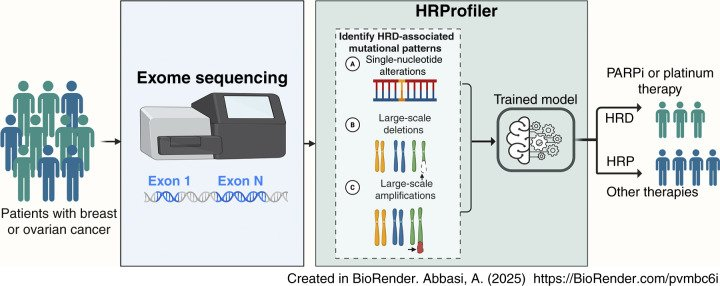
Machine learning that detects homologous recombination deficiency from whole-genome and whole-exome sequencing.
Cancer Research 2025
First author · Patented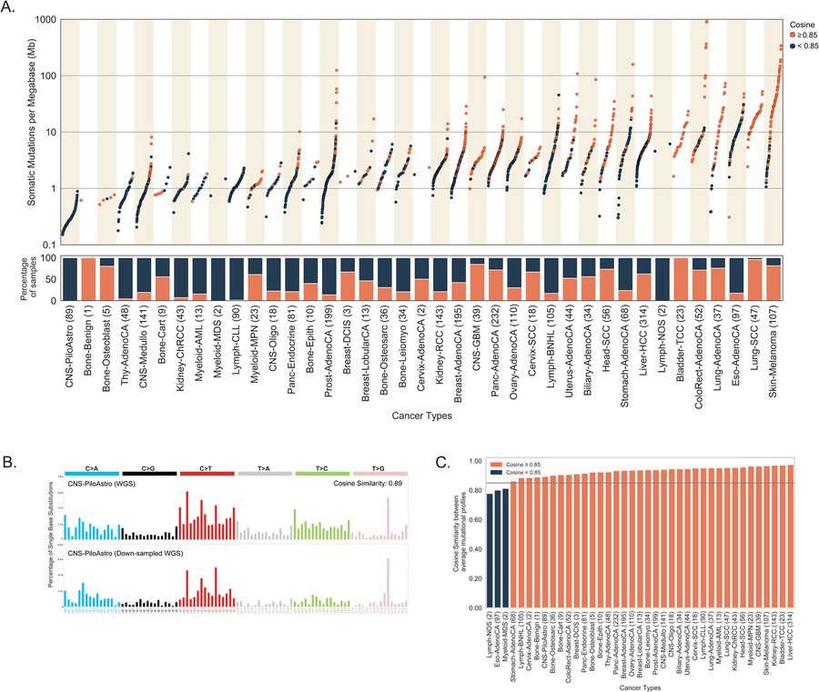
What whole-genome, whole-exome and targeted sequencing can and cannot reveal about mutational signatures.
DNA Repair 2021
First author · Review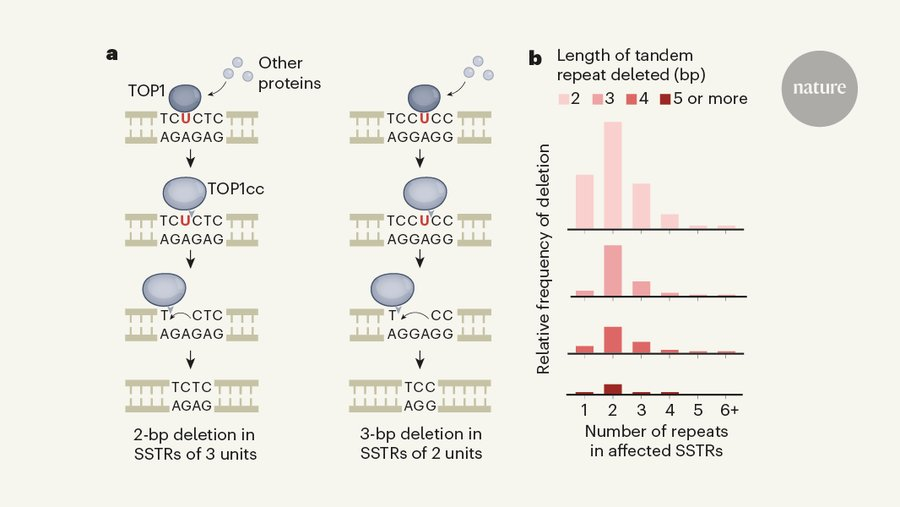
How the enzyme TOP1 produces the ID4 indel signature at short tandem repeats.
Nature 2022
First author · News & Views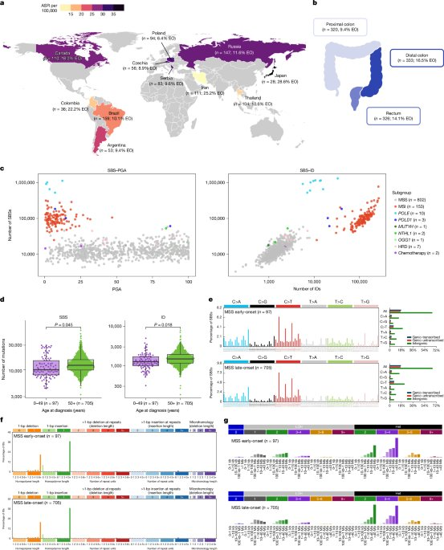
Geographic and age variation in mutational processes across 981 colorectal cancers from 11 countries, including colibactin in early-onset disease.
Nature 2025
Led microbiome analyses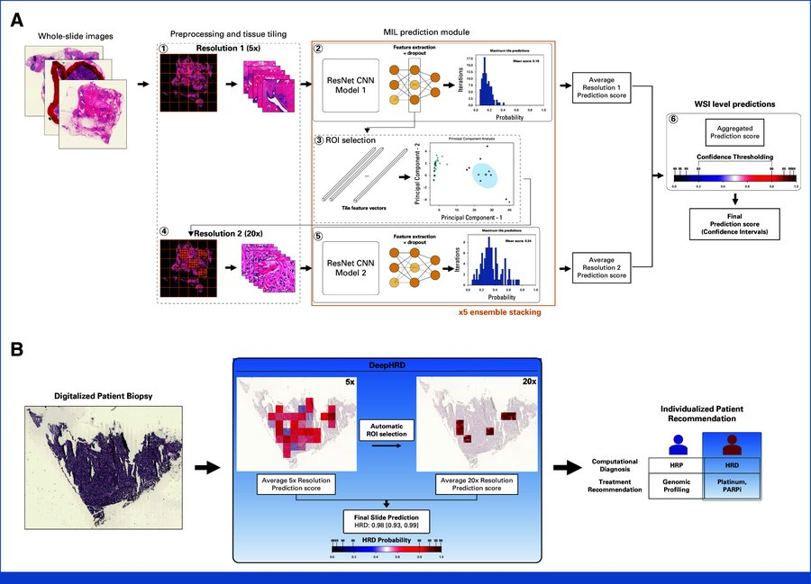
Deep learning that predicts HR deficiency and platinum response directly from routine histology slides.
Journal of Clinical Oncology 2024
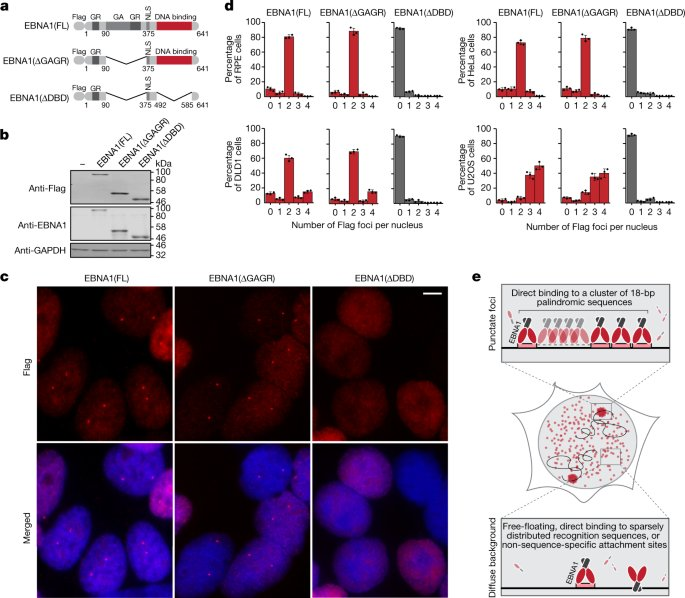
Epstein–Barr virus EBNA1 breaks chromosome 11 at clustered palindromic repeats.
Nature 2023
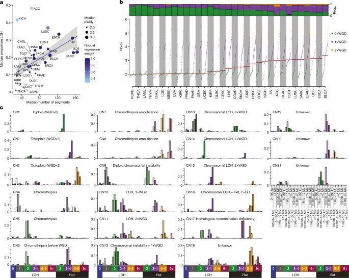
A pan-cancer framework of 21 copy-number signatures across 9,873 cancers.
Nature 2022
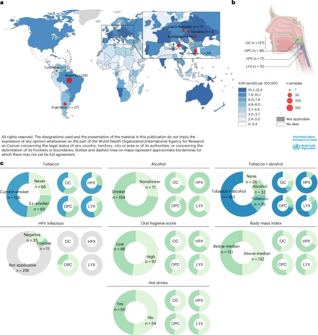
Six tobacco-associated signatures, and how tobacco and alcohol act together on the genome.
Nature Genetics 2025
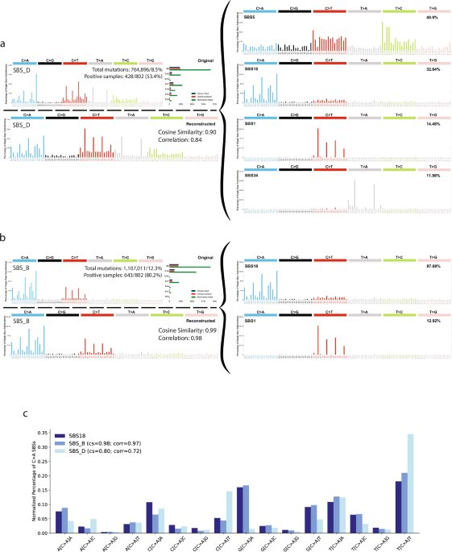
Identification and validation of a previously missed mutational signature.
Nature Communications 2026
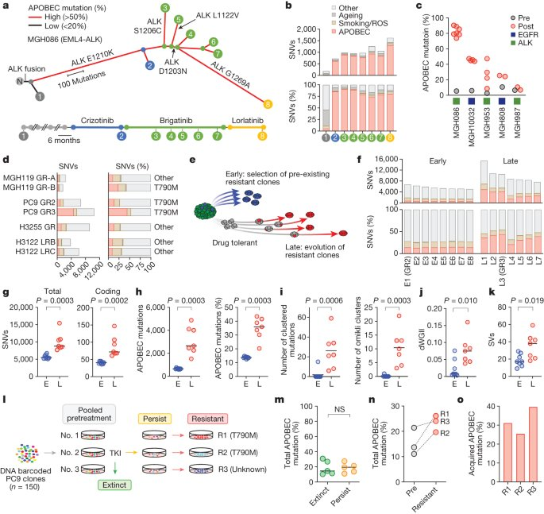
Targeted therapy switches on APOBEC3A mutagenesis in persister cells, driving resistance in lung cancer.
Nature 2023
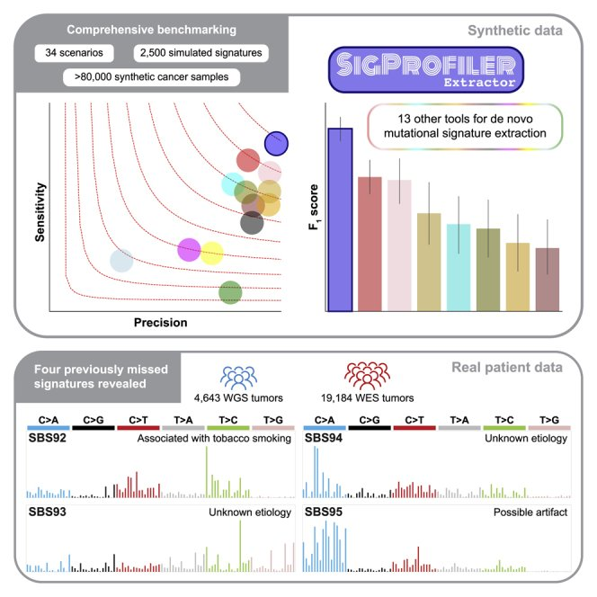
De novo extraction of mutational signatures, benchmarked against 13 other tools.
Cell Genomics 2022
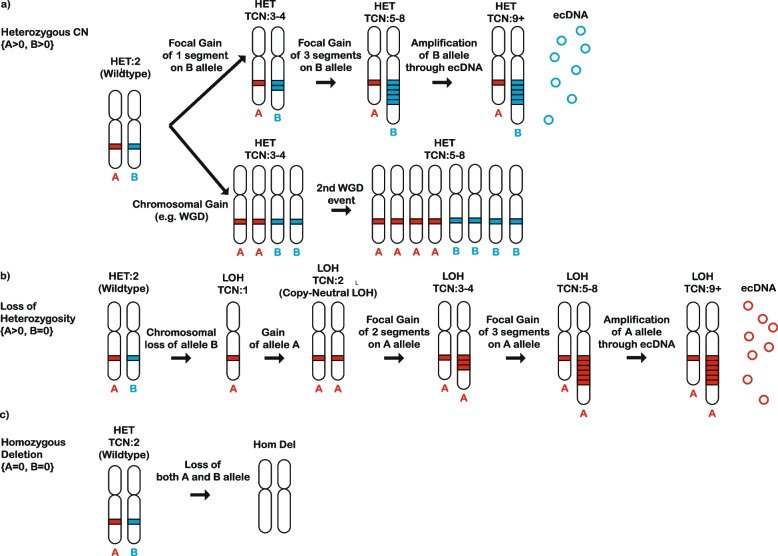
Visualizing and exploring patterns of large mutational events, including copy-number and structural changes.
BMC Genomics 2023
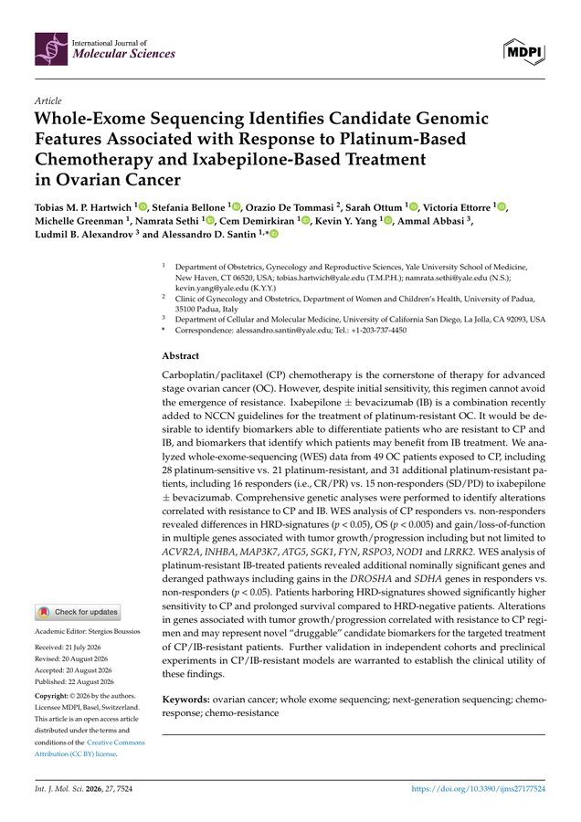
Whole-exome features associated with response to platinum and ixabepilone treatment.
Int J Mol Sci 2026
Mutagenic bypass of uracil-derived abasic sites underlies the SBS17 mutational signature.
bioRxiv 2026
PreprintCompetition, mutualism and host immune control in a cancer microbiome.
bioRxiv 2025
Preprint18 articles in 16 outlets have covered research I contributed to.
Profile: 4 sisters, 1 college: it's a family affair, Mount Holyoke College News, 2019.
Tools from my research that other labs can run.
Predicts homologous recombination deficiency from whole-genome or whole-exome somatic mutations using six interpretable features.
Nextflow pipeline that detects and quantifies the colibactin pks island in tumour genomes and metagenomes, and identifies which bacterium carries it.
Cancer-microbiome profiling of whole genomes: host-read removal, consensus taxonomy from two classifiers, and contaminant removal.
Contributor to SigProfilerExtractor and SigProfilerMatrixGenerator, community tools for mutational-signature analysis.
Training the next generation, building community, and staying close to the clinic.
UC San Diego, 2021–present. I mentor master's and undergraduate students building transcriptome-based methods to detect homologous recombination deficiency. Their softHRD work was presented as a poster at the AACR Annual Meeting 2026, and one mentee has gone on to a PhD at MD Anderson Cancer Center.
I guide high school students through their first research projects: analysing colorectal cancer genomes to find and interpret mutational patterns.
UC San Diego Health, 2023. I shadowed in a genitourinary oncology clinic, observing patient consultations, tumour boards and treatment planning for advanced prostate cancer. I also joined discussions on using genomic testing to guide therapy.
Invited speaker, 2023. Talked AP students at Fremont Union High School through my path into science and how to prepare for graduate school.
UC San Diego Postdoctoral Association, 2025–2026. Co-lead events and peer support that build community among postdoctoral scholars.
UC San Diego Housing & Residential Life, 2023–2025. Planned and hosted community events for more than 500 graduate student residents, focused on well-being and academic-life balance.